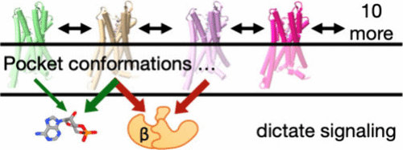

VOL. MMXXVI · NO. XXVIII
ARTS
SML CRAFT ADV · SHOWERS · N WINDS 18KT · 79°
the-depaolo-dispatch
> issued whenever something is worth reporting · est. 2026 · free

FIG. 01
MD simulation · PROTEINS · 2026

FIG. 02
VAE latent space — deca-alanine
JAX · Flax · thesis ch. 3 · 2026

FIG. 03
JCIM · 2025
Index of works · with annotations
2026
Deep Neural Auto-Encoding of Protein Structural Ensembles
In prep · JAX · Primary Author
2026
PROTEINS · Primary Author
2025
JCIM · Co-Author
2022
JBC · Co-Author